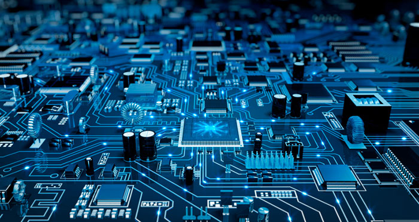

Kapittel 3: Digitalt utstyr
3.1: Datamaskiner og smarttelefoner Til toppen
Bærbare PC'er og smarttelefoner er de datamaskinene vi omgår oss mest med i dag. De inneholder mye av den samme teknologien, som hovedkort, prosessor, lagringsmedium, minne, skjerm, nettverkskort, skjermkort, batteri, innganger, utganger, kamera og mikrofon.
Hovedkomponenten i datamaskinen er hovedkortet, der blant annet kun-lese-minnet (ROM) til maskinen ligger, som inneholder oppstartsinstruksene som gjør at den kan starte operativsystemet. Prosessoren er "datamaskinens hjerne", der alle beregningene som driver maskinen foregår. Prosessoren kan midlertidig lagre beregninger i arbeidsminnet, som lagres i RAM-brikker i maskinen. Dette er viktig for å gjøre prosessoren mer effektiv. Vi har
Lagringsmediet på datamaskinen brukes til permanent lagring, og jobber ikke direkte med prosessoren som RAM-brikkene. Denne lagringen forsvinner ikke når maskinen skrus av. I PC'er bruker man enten en HDD (hard disk drive) eller en SSD (solid state drive) til lagring. SSD'en er raskere siden den baserer seg på elektronisk lagring, men har mindre kapasitet og høyere pris enn HDD'en.
3.2: Maskinvare og programvare Til toppen
De fysiske komponentene av en datamaskin kalles maskinvare, mens den digitale delen er programvare. For at programvaren skal kunne benytte maskinvaren, må de kommunisere. Dette gjør de via en ROM BIOS-brikke på hovedkortet.
3.3: Standarder for maskin- og programvare Til toppen
Standarder sørger for at programvare og maskinvare fra forskjellige produsenter kan kommunisere sammen.
Digitale signaler kan sendes på flere ulike måter. To eksempler på dette er seriell og parallell kommunikasjon. Seriell kommunikasjon sender 1 bit om gangen, mens parallell kommunikasjon sender 8 bits om gangen. Parallell kommunikasjon er likevel ikke raskere enn seriell kommunikasjon, fordi hastigheten (bits per sekund, bps) kan økes mer for seriell kommunikasjon. USB, som står for Universal Serial Bus, er en standard for seriell kommunikasjon.